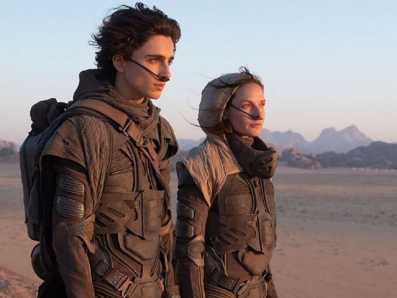
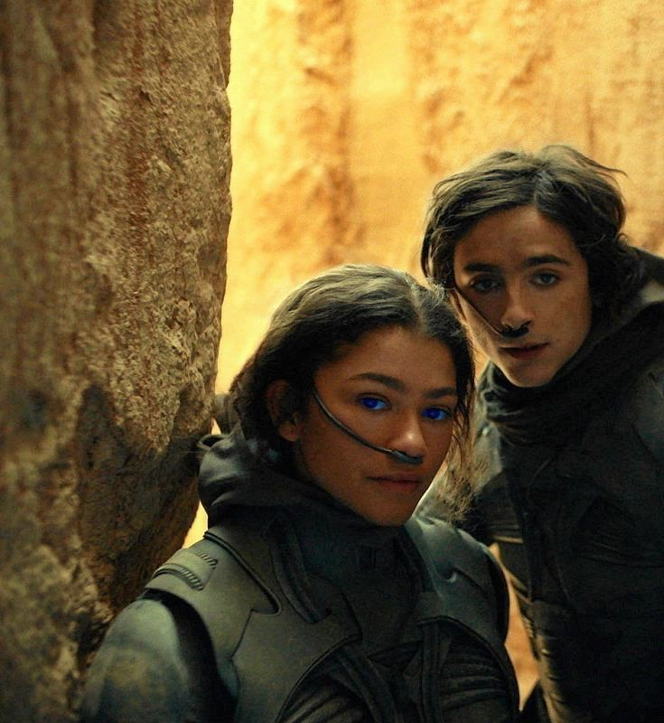
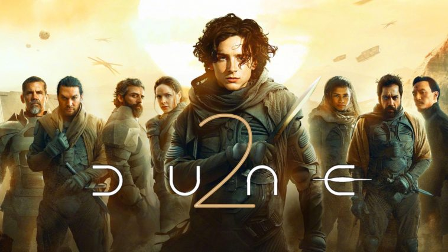
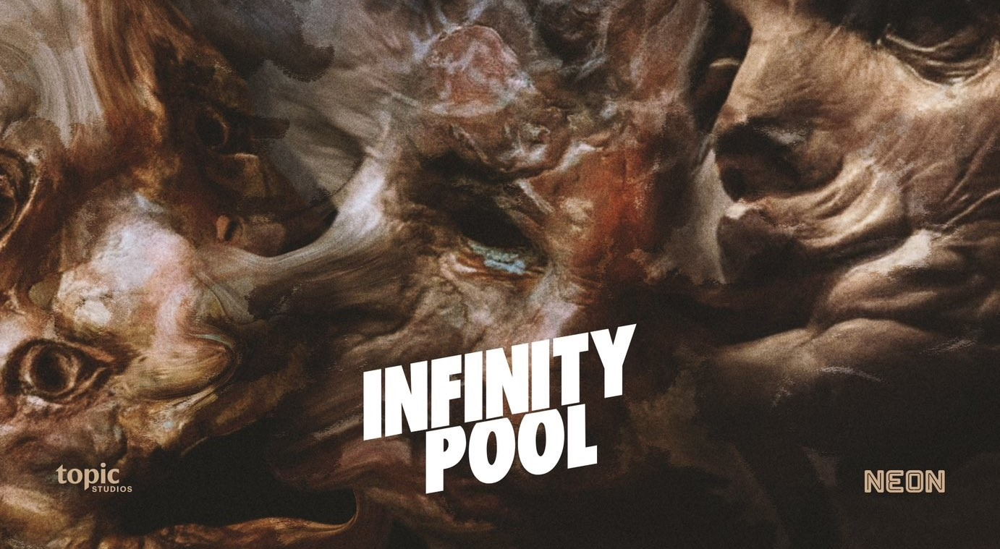
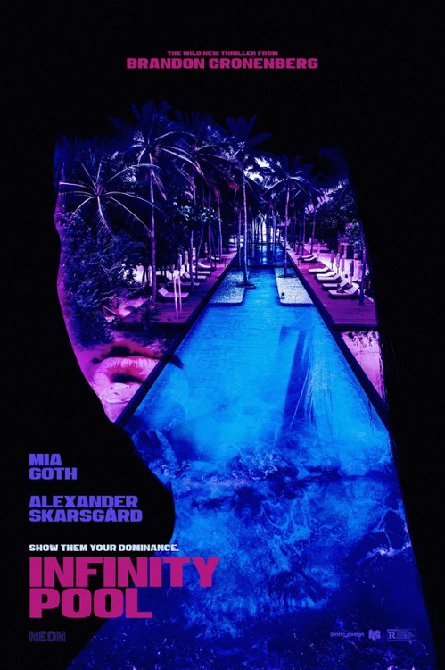

Jednym z najbardziej wyczekiwanych filmów roku 2023 jest Diuna 2
Kolejnym tytułem będzie INFINTY POOL
    
Hans Zimmer jako wielki fan książkowej "Diuny" tak bardzo chciał napisać ścieżkę dźwiękową do kinowej produkcji, że zrezygnował z komponowania muzyki do filmu "Tenet".
Film był kręcony w Budapeszcie (Węgry) oraz w dolinie Wadi Rum (Jordania), Abu Zabi (Zjednoczone Emiraty Arabskie) oraz w Norwegii.
Diuna została po raz pierwszy opublikowana w dwóch częściach przez magazyn „Analog”. Wkrótce potem Frank Herbert rozpoczął starania, aby wydać ją jako samodzielną książkę. 23 różnych wydawców odrzuciło powieść, uznając ją za zbyt zagmatwaną, z powolną akcją.